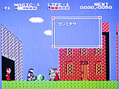
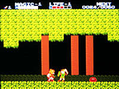
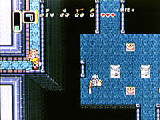
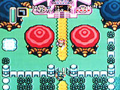

|
■前作の人気に応え、新たな冒険の登場。 |
|
  |
■『リンクの冒険』 ファミリーコンピュータディスクシステム用 1987年１月14日発売 2,600円 ■前作から数年後のお話。魔法をかけられ、永遠に眠り続ける初代ゼルダ姫を救うため、リンクはふたたび冒険の旅へ。ハイラルの大地にある６つの神殿に置かれた石像に、クリスタルをはめ込んでいくのがリンクの仕事だ。途中、ふたたびガノン軍団とあいまみえることになる。 ■前作のシステムと世界観を受け継ぎながらも、いろいろと新しい試みがなされていて、当時のゲームファンをうならせた。たとえば、ワザありの画面構成。通常は前作同様、上から見下ろすタイプなのだが、街やダンジョンに入ると横からの視点へと切り替わるよう、工夫されていたのだ。また、個性的なレベルアップシステム。経験値の概念が導入され、それが一定の値に達すると、攻撃力、魔力、体力のどれかひとつをプレイヤーが選んでレベルアップできるようになっていた。アクションとしても、ロールプレイングとしても、かなりのパワーアップがなされた内容だった。 |
|
■今なお「My Best Of Super Famicom」なファンも多い傑作 |
|
  |
■『ゼルダの伝説 神々のトライフォース』 スーパーファミコン用 1991年11月21日 7,700円（税別） ■主人公のリンクが、捕らわれのゼルダ姫を助けるために、ハイラル地方を冒険し、魔王ガノンと対決する……といった基本事項はそのままに、スーパーファミコンならではの演出が満載の作品。 ■なかでも、特筆すべきはやはりグラフィックか。リンクの豊かな表情、雨に濡れるハイラルの大地、寒々とした氷のダンジョンなどがカラフルに描き出されている。ディスク版のファンも納得のトータルイメージだ。 ■泳いだり、ダッシュするなど、数々のアクションが追加されたこともあり、アクションゲームとしての要素が強い仕上がりになっている。一方、光と闇の似て異なるふたつの世界があり、それぞれの世界でやったことが別の世界に影響する仕掛けがある。これにより、ロールプレイング的な謎解きの要素もグンと高まっているのだ。 ■楽しいのが、街などに用意されているミニゲームの数々。冒険の緊張をほぐしてくれる。 |
| Page-1 | ■ | 1986年『ゼルダの伝説』ディスクシステム、ファミコン用 |
| Page-2 | ■ | 1987年『リンクの冒険』ディスクシステム用 1991年『ゼルダの伝説 神々のトライフォース』スーパーファミコン用 |
| Page-3 | ■ | 1993年『ゼルダの伝説 夢をみる島』ゲームボーイ用 1995年『ゼルダの伝説』サテラビュー用 |